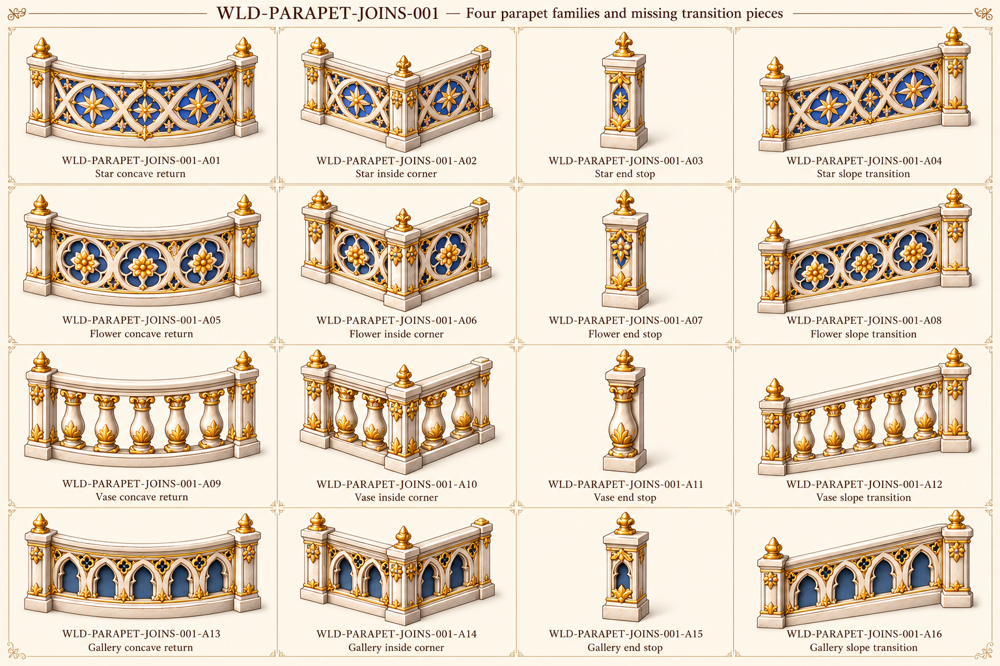

Original source vocabulary

Original palace component references. No accepted models or verified seamless textures/joins.
All active families · Part IDs · Repeat profiles and source/proposed roles

Existing six source masters are reused; new drawings add inward/concave/end/slope variants.
A02/A06/A10/A14 appear outward-facing in the oblique view; actual inner/outer corner handedness must be resolved from plan before modeling. Curvature sign/void backing also require geometry review.